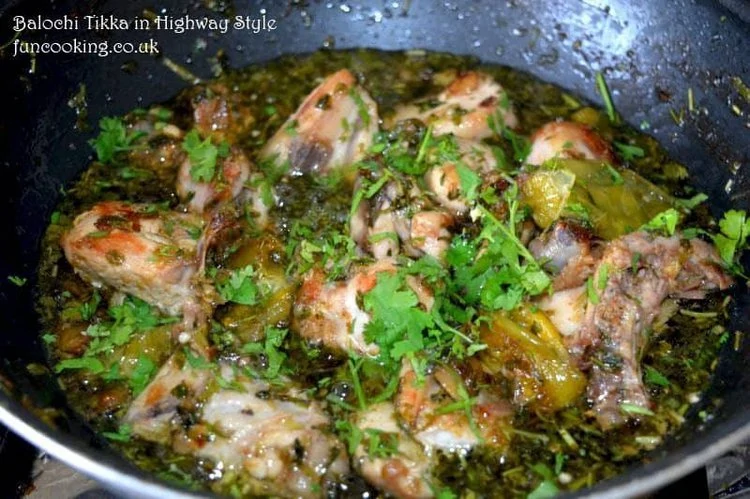
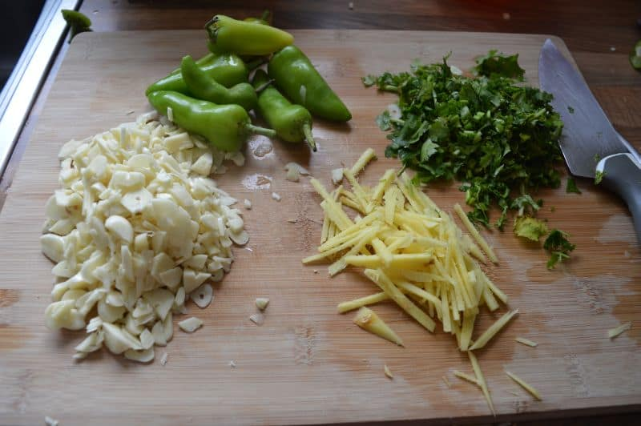
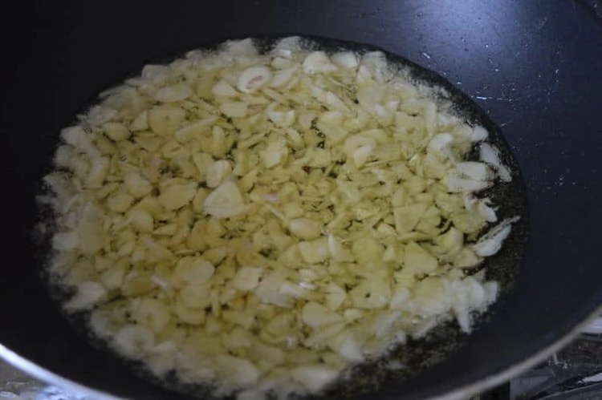
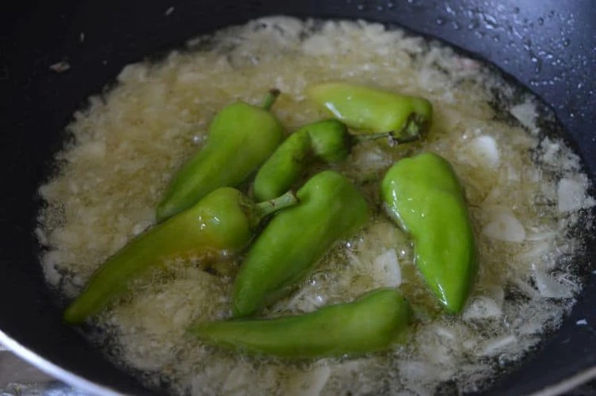
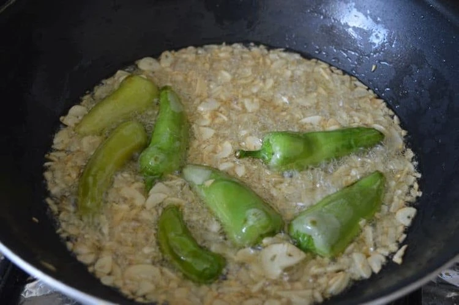
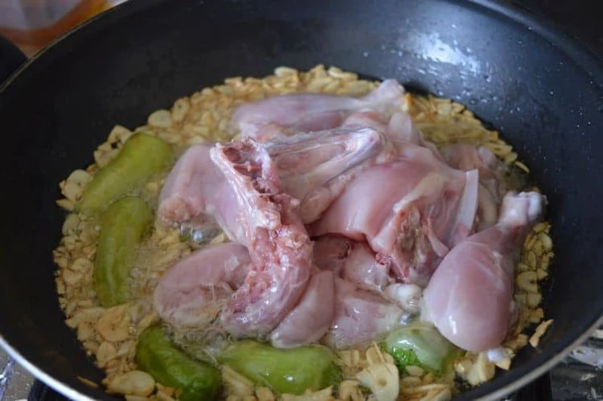
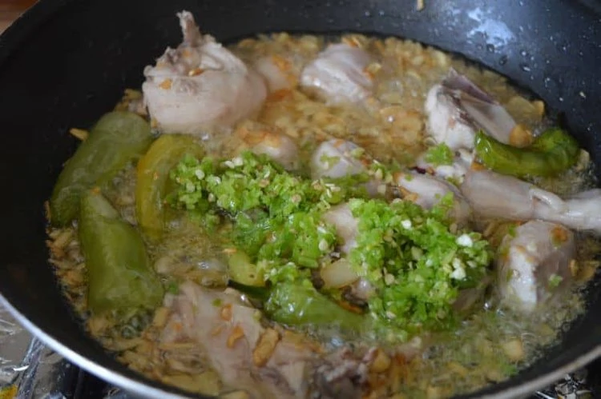
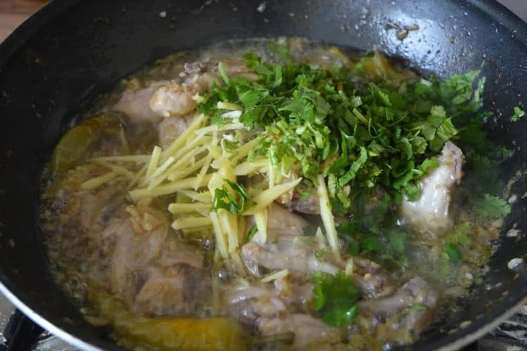
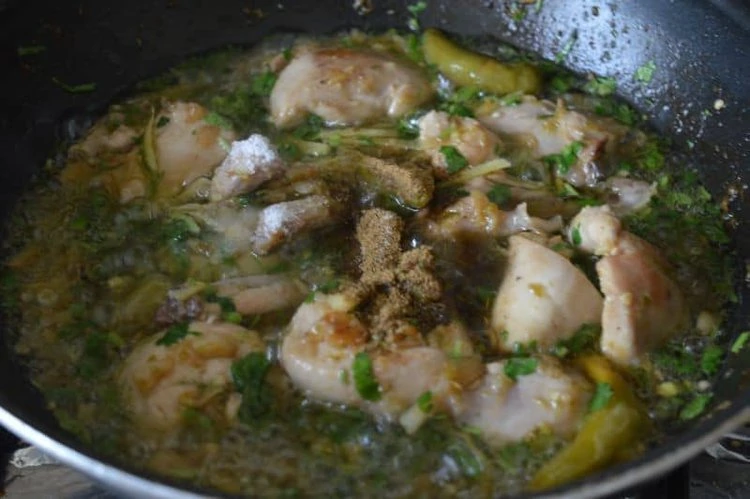

Balochi Tikka in Highway Style
Balochi-tikka-in-highway-style

Ingredients,
Chicken 700-750 g
Oil 1 cup
Garlic 150 g ( almost 3 whole )
Ginger 3 inch pieceGinger 3 inch piece
Green chilies whole 150 g (almost 7-8 big)
Green chilies chopped 3 tbsp
Lemon juice 4-5 tbsp
Garam masala powder 1 tsp
salt 1 tsp
fresh coriander 1 cup chopped
Directions,

- Cut garlic in thin slices…do not chop it.
Julian cut ginger.chop fresh coriander

- Heat a wok ,add 1 cup oil with garlic. cook for 1 minute on high heat.

- Now add whole green chilies.

- Cook them until changes their colour.

- Now add chicken and cook it for almost 5 minutes on high heat. Until chicken changes its colour.

- Now add chopped chilies and lemon juice.
stir and with lid and slow heat cook it for almost 10 minutes.

- Take off the lid and stir it on high heat until all extra juices from chicken evaporates.
Now add ginger and coriander…stir for 1 minute

- Now add garam masala powder and salt. Stir and again with lid cook it for 5-7 minutes.
- Balochi tikka in highway style is ready.
serve with fresh hot naan
add more lemon juice if you like.